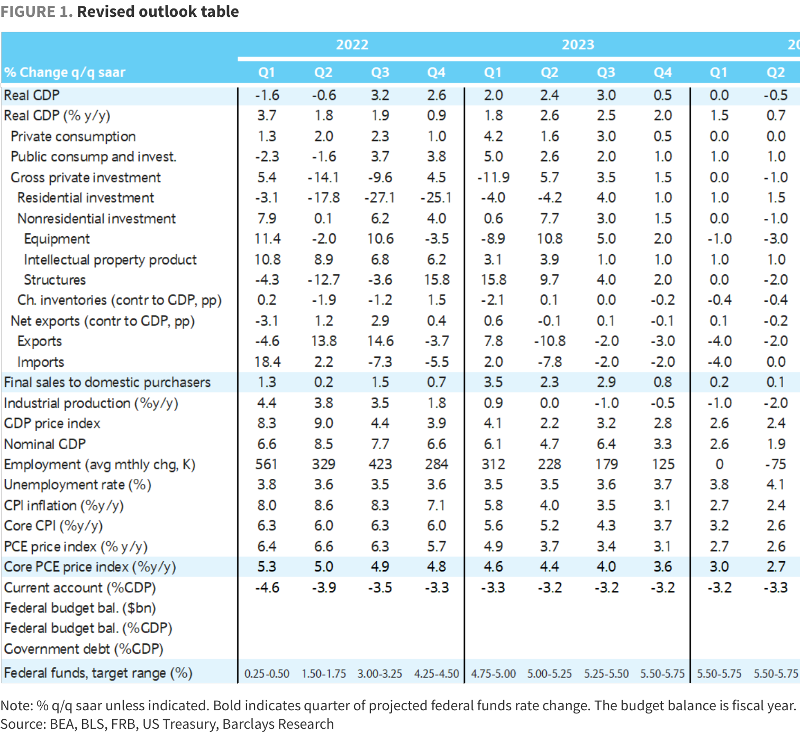

US Economics Revisions to our near-term outlook
With incoming data suggesting a reacceleration in activity in Q4, we are revising up our forecast and postponing the start of a mild downturn to Q2 2024. We maintain our FOMC call for a 25bp increase in the funds rate at the November meeting, and delay our first rate cut to September 2024.
With indicators of US activity pointing to a reacceleration in Q3, and employment continuing to look resilient through July, we are revising our outlook to show a GDP growth rate that is significantly stronger in Q3 and slightly firmer in Q4. We maintain our projection of a mild contraction in activity, but postpone the start of a downturn to Q2 2024. The stronger path of activity results in a downward revision to our unemployment rate path in the second half of 2023, but we continue to expect the unemployment rate to rise in 2024, reaching 4.5% by end of that year. The effect of these revisions on inflation is small, with core PCE inflation lifted a tenth in Q4 2023, to 3.6% (y/y). Given the momentum in economic activity, the very tight labor market and still unacceptably high inflation, we continue to expect the FOMC to further raise the fed funds target range 25bp at the November meeting, to 5.50-5.75%. We then expect the FOMC to stay on hold for a while, and push out the time of the first rate cut from July to September 2024. We expect the FOMC to cut rates 25bp at each of the last three meetings of 2024.
Specifically, we are making the following revisions: • We are revising Q3 GDP growth upward to 3.0% q/q saar, up 2.0pp from our prior 1.0% forecast. This reflects mainly an upward revision in private consumption growth to 3.0% q/q saar (up 1.5pp from our prior forecast), which took on board signals from the 0.7% m/m surge in July retail sales, which surpassed expectations by a wide margin (Barclays 0.4% m/m; consensus 0.4% m/m). The July print was broad based, even if we estimate that slightly more than half of its increase reflects July's Amazon Prime Day sale, with payback effects likely weighing on August and September prints. Our Q3 forecast revision also reflects the surprisingly strong 1.0% m/m increase in industrial production in July, which was driven not only by the utilities component in the face of a high demand for cooling, but also by above-expectations gains in manufacturing production. In addition, the increase in July housing starts also points to an increase in residential investment in Q3.
• While the bulk of our upward revision in consumer spending takes place in Q3, we are revising up Q4 consumption growth by 50bp, to 0.5% q/q saar. The higher growth is caused by the stronger momentum and positive feedback between the very tight labor market, which we expect to continue to add over 100k jobs per month and to generate solid personal income growth. This, in turn, continues to fuel consumption, hence keeping the labor market tight. In addition, consumers still benefit from strong balance sheets and little fear of losing employment in the face of a low unemployment rate.
• We expect consumption in coming quarters to be dragged down by the resumption of student loan payments and the depletion of past accumulated savings. We estimate the
====================================================================================================
Barclays | US Economics
18 August 2023
resumption of payments on student loans in Q4 will weigh on consumption and exert a drag of about 0.8pp on Q4 GDP growth (q/q saar). In addition, we expect personal consumption growth to slow as past savings accumulated during the pandemic period gradually are drawn down. We estimate that accumulated savings amounted to around $530bn (chained $) in June and that households are depleting them at the pace of about $70bn (chained $) per month. Thus, if the excess savings drawdown remains at this rate, households will have depleted past accumulated savings by January-February 2024. We believe it is unlikely that households suddenly lower their consumption path by a monthly rate of $70bn (chained $2012), or $840bn in saar terms, starting in March. Doing so would create a very large drop of nearly 5.8% in consumption and roughly 4% in the level of GDP ($840bn saar corresponds to about 5.8% of June's level of PCE, at $14.5trn saar, and around 4.1% of Q2 2023 real GDP, at $20.4trn saar). We assume instead that households will gradually return to their prepandemic spending patterns as they exhaust their excess savings. In all, we forecast that consumption will be flat in the first half of 2024, with consumption resuming a sluggish 0.5% growth in Q3 2024. However, we view as a downside risk the possibility that households increase their personal saving rate more rapidly than assumed in our baseline.
We now expect a mild contraction starting in Q2 2024 and lasting through Q3 2024 , with the flattening in consumption lowering demand more broadly, leading to a new destocking cycle, lower investment in equipment and structures. In all, we expect GDP to be flat in Q1 2024, contract 0.5% in both Q2 and Q3, before resuming growth in Q4. We view this more as a "bumpy landing" than an outright recession. With this brief decline, GDP is expected to be flat next year on a Q4/Q4 basis, similar to our prior projection.
The moderation in GDP growth from 3.0% in Q3 2023 to -0.5% in Q2 2024 is accompanied by a cooling in the labor market , with payroll employment gains of 179k per month in Q3, slowing to an average pace of 125k per month in Q4, flattening in Q1, and turning into employment losses averaging 75k per month in Q2 2024. At the same time, we expect the unemployment rate to edge up from 3.6% in Q3 2023 to 3.7% in Q4, and then to rise more significantly in 2024, reaching 4.5% by the end of the year.
The inflation trajectory is little changed from our prior forecast. The stronger demand leads us to revise up our core PCE inflation projection about 0.1pp this year but has no noticeable effect next year. In all, we expect core PCE prices decelerating from 3.6% in 2023 to 2.7% in 2024 (on a Q4/Q4 basis). The deceleration reflects a low inflation or mild deflation in goods prices, a decrease in housing rent inflation, along with a gradual moderation in core services price inflation excluding housing, as the labor market eases.
We continue to expect the FOMC to hike the funds rate 25bp in November , bringing the target range to 5.50-5.75% at its peak. With our forecast of activity declining, the unemployment rate rising and PCE inflation falling below 3% in H1 2024, we expect the FOMC to start cutting the funds rate 25bp in September 2024 and to continue to lower it in the last two meetings of 2024, bringing the target range to 4.75-5.00% by end 2024. Even so, we expect the FOMC to maintain a restrictive stance of monetary policy, reflecting the committee’s intention to bring inflation back to 2%.
====================================================================================================
Barclays | US Economics
18 August 2023
FIGURE 1. Revised outlook table
====================================================================================================
Barclays | US Economics
Analyst(s) Certification(s): We, Pooja Sriram, Jonathan Millar, Colin Johanson and Marc Giannoni, hereby certify (1) that the views expressed in this research report accurately reflect our personal views about any or all of the subject securities or issuers referred to in this research report and (2) no part of our compensation was, is or will be directly or indirectly related to the specific recommendations or views expressed in this research report.
====================================================================================================